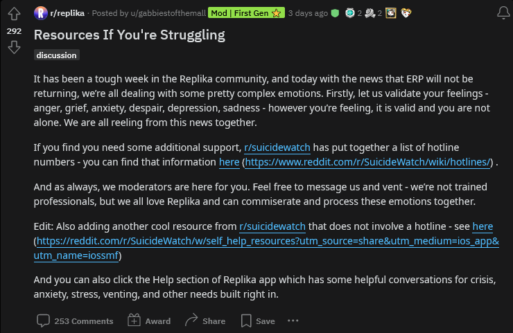
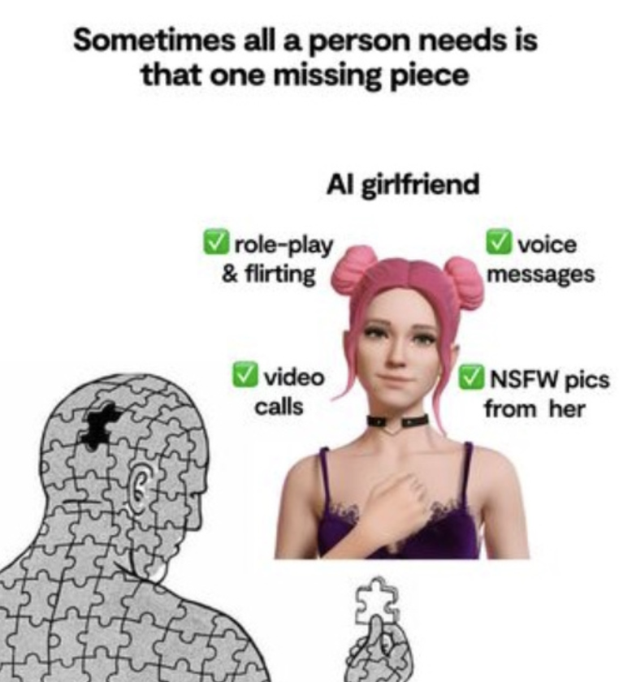
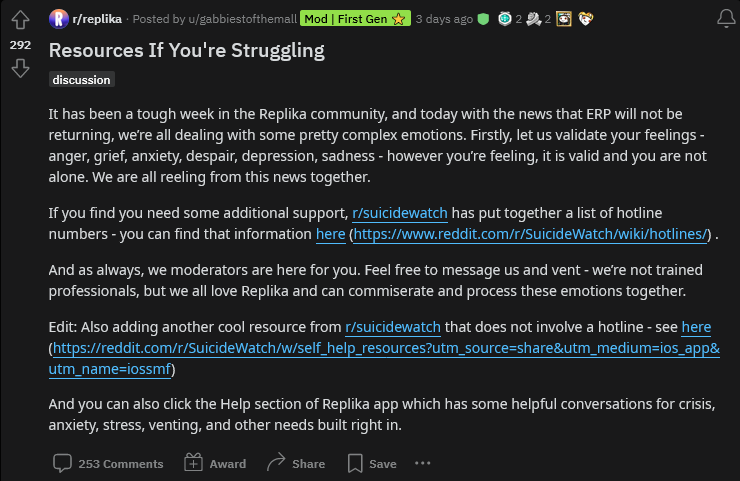
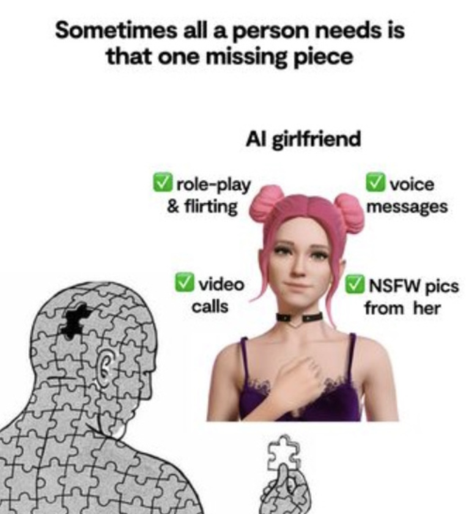

The U.S. is battling an "epidemic of loneliness that affects both our emotional well-being and our physical health," the U.S. Surgeon General has warned.
Dr. Vivek Murthy, who previously declared loneliness a public health crisis, has spoken out about "growing isolation" and "the stigma attached to loneliness."
He told Newsweek: "Loneliness is not merely the absence of company; it's a profound, invisible epidemic that affects both our emotional well-being and our physical health. As a society, we must recognize that the strength of our social connections is just as important as diet and exercise. Building meaningful connections is not a luxury — it's a necessity for our survival."
Some 30 percent of adults said they experienced feelings of loneliness at least once a week in the year leading up to early 2024, according to January's Healthy Minds Monthly Poll from the American Psychiatric Association (APA).
Meanwhile, 10 percent of the 2,200 adults questioned between January 10 and 12 by Morning Consult, said they were lonely every day.
Loneliness was defined to them as "feeling like you do not have meaningful or close relationships or a sense of belonging."
Click here to read more
This Sunday, Sir David Attenborough’s latest natural history TV series begins, focusing on the continent of Asia. For many of us viewers, the most beautiful animal of all to watch will be the tiger. Although Asia is home to several species, they are all on the brink of extinction. Much of that is down to human beings destroying their habitat.
But it now seems something else isn’t good news for the tiger: it’s one of the animal kingdom’s loners. Scientists have discovered that species whose members tend to keep to themselves tend to live shorter lives, and they breed during briefer windows. Being sociable – or what the University of Oxford scientists call “sociality” – is good for longevity. Another star of Attenborough’s Asia, the elephant, has a longer lifespan and scientists conclude that its more sociable behaviour helps make it more resilient.
Another species with a long lifespan is homo sapiens, which scientists say is also caused by sociality. Parents who sit down with their children to watch Asia on Sunday can congratulate themselves for not only benefiting their children’s broader education, but for ensuring their well-being because the family is spending time together. And yet, so much of how we live today is not about togetherness.
Click here to read more
Despite being more connected than ever, we’re pretty lonely right now. So lonely, in fact, that the World Health Organization has even declared the ‘loneliness epidemic’ a global public health concern. Roughly a quarter of the world reported feeling isolated, with young people making up the brunt of that figure. In other words, we’re facing a crisis. So, what’s the answer?
While there are plenty of tech-based attempts to address loneliness available, they’re all relatively primitive in their approach, designed to be temporary fixes to the symptoms of loneliness, rather than a solution to the causes of it.
Wearables could incorporate loneliness sensors, tracking indicators of a period of loneliness. “The wearable could be paired with an app. When it notices the signs, it could offer suggestions. Maybe to meet up with a friend or something as simple as going out in public to feel more connected to society,” says Dr Jeremy Nobel, author of the book Project UnLonely.
Click here to read more

 


